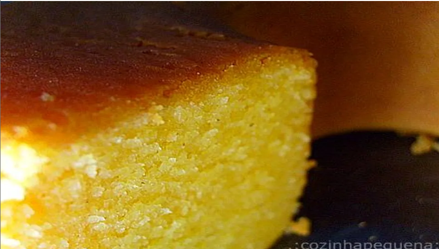

Site da receita de bolo de Fubá
1 Xícara de Óleo Comum;
4 Ovos;
2 Xícaras de Açucar;
1 Xícara de Leite Morno;
1 Xícara de Farinha de Trigo;
1 Xícara de Fubá;
1 Colher de Fermento em Pó;
Manteiga para untar.
